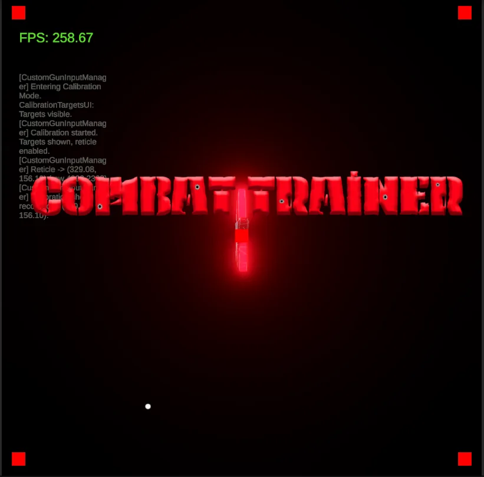
Hardware integration
Peripherals over serial, and protocols reverse-engineered from what the device actually sends — not what the docs claim.
Crunchrock Games · Contract
Hardware that speaks its own protocol, live clients with players already inside them, WebGL builds arguing with a load-time budget, and VR that has to feel right on your face instead of on a monitor. Seven years of taking the jobs that are hard to write a ticket for.


Usually the part of the project nobody could quite write a ticket for.

Peripherals over serial, and protocols reverse-engineered from what the device actually sends — not what the docs claim.
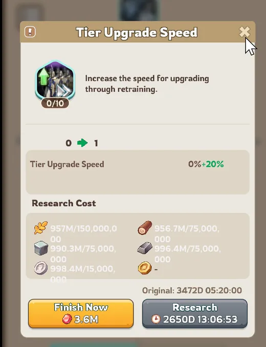
Big codebases with real players in them, where you don’t get to refactor your way out.
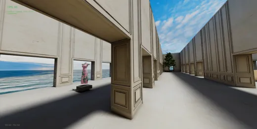
Unity in a browser, where load time and memory budget end up being the whole job.
Quest 3 and room-scale, built inside the headset. Comfort problems never show up on a monitor.
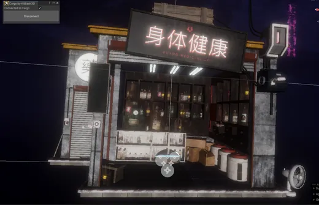
Terrain, foliage and real-time lighting. Realtime mixed with baked indirect so it still fits the budget.
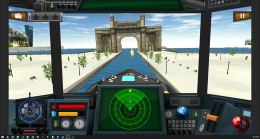
Half-finished codebases, stalled builds, and releases a platform deadline broke.
Six jobs, what was actually wrong with them when we picked them up, and what ended up shipping.
Case 01 — WebGL brand world
A branded gallery for Digital Fashion Week that had to run in a browser, which turns every asset, shader and light into a negotiation with load time.
We built the environment out — architectural interiors, framed ocean vistas, a real-time water shader with sun glare, and the brand mark as carved dimensional lettering. Then an optimization pass to get it delivering in-browser without losing the look.
Archviz-grade interiors inside a browser budget, across VR, WebGL and mobile.
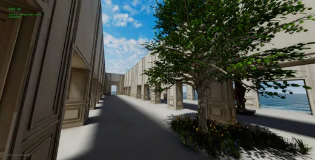
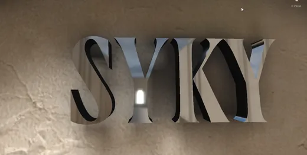
Case 02 — Live-service mobile
A live strategy title with an established player base, so every change has to respect systems that already ship. “Just refactor it” is never on the table.
Tutorial and onboarding flow, battle rewards, progression screens, world-map UI and the research feature — 3,000+ hours across direct and platform contracts, including BitLife and UX/UI on Goodgame Empire.
Features live in front of an established player base, three years running.

Live economy UI. A layout bug here costs real money.
Case 03 — Serious games
ASTM industrial training delivered in a browser. It doesn’t just have to look right — it has to teach a compliance rule and prove the trainee absorbed it.
We built an interactive sampling sim with guidance that surfaces the standard the moment you break it. Sample within a foot of the pad edge and it tells you right then, rather than failing you quietly at the end.
Compliance training that runs in a tab — no install, no plugin, no headset.

Case 04 — Hardware integration
We inherited a half-built shooting trainer. A physical light gun drives an on-screen reticule and the game scores your shots — except on day one the Unity client was receiving a packet from the gun and had no idea how to read it.
We rewrote the controller classes against the packet structure the hardware was actually sending, built a loopback rig so it could be tested without the gun in hand, then wrote the calibration routine that maps physical aim to screen space on the client’s 1080×1080 display.
The first calibration pass was — quoting our own commit message here — “bug-ridden.” The second one wasn’t.
A calibrated hardware trainer with the protocol tested end to end.
Case 05 — Feature ownership
An isometric gardening game shipping to the browser, where we weren’t handed tickets — we were handed features and asked to come back when they worked.
Quest flow, the garden interaction layer, and progression UI, built end to end: design pass, implementation, and the WebGL optimisation that keeps an isometric scene full of foliage inside a browser’s memory ceiling.
Whole features owned start to finish on the current Unity LTS, in a browser build.

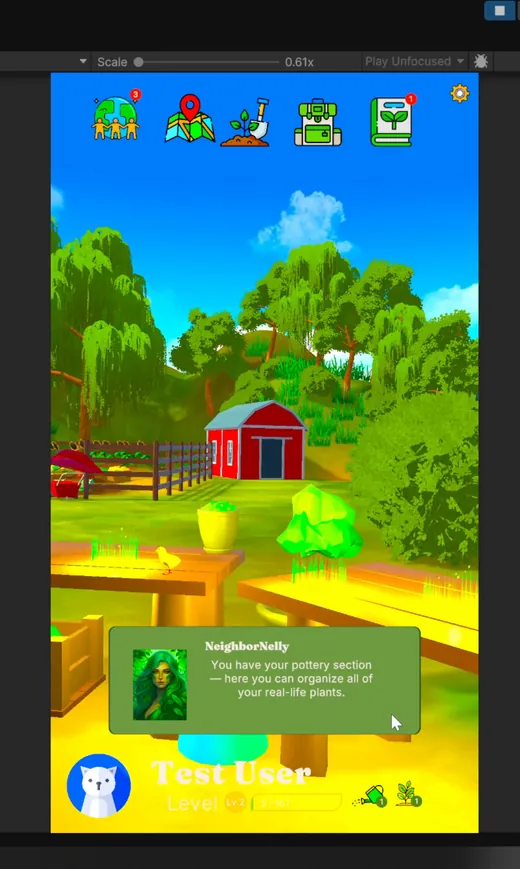
Case 06 — Combat feel & VFX
Top-down arena combat against crowds. The hard part of a horde isn’t spawning it — it’s making a hundred simultaneous deaths legible enough that the player still knows what they hit.
We built the hit feedback and blast VFX to stay readable at crowd density: spray and impact cues that survive being stacked forty deep, tuned against frame budget rather than against a still frame.
Effects that read at crowd scale without the frame time going with them.
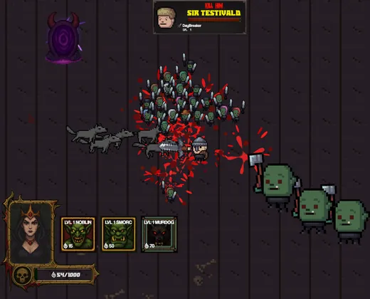
No discovery phase that bills for six weeks before anything runs.
In whatever shape it’s in. A repo, a build that crashes, a deadline, a device on a desk. We’ll tell you straight whether we’re the right shop — including when we’re not.
Not a document about the thing. The thing, badly, on your hardware — so the unknowns show up while they’re still cheap.
Regular playable drops. If a week went sideways you’ll hear that too, with the reason, before you have to ask.
Environments, gameplay systems, UI and tech art from across the book. Click anything to see it bigger.
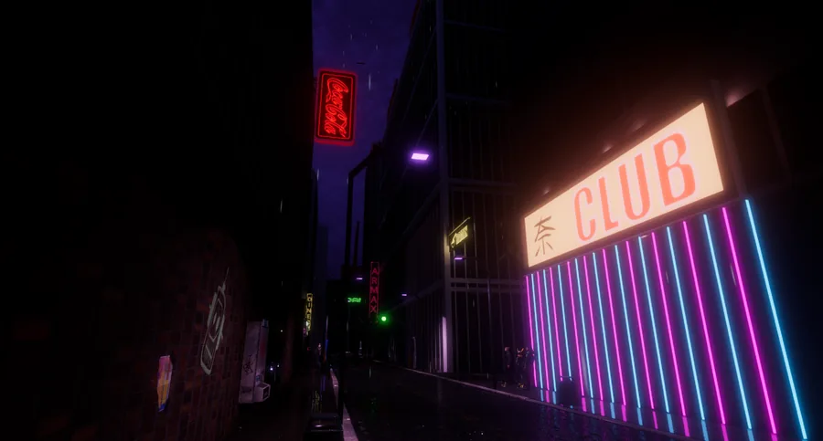
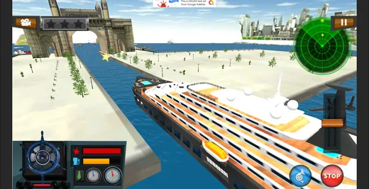
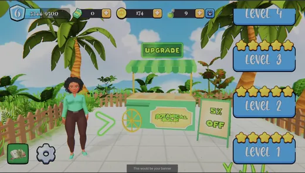
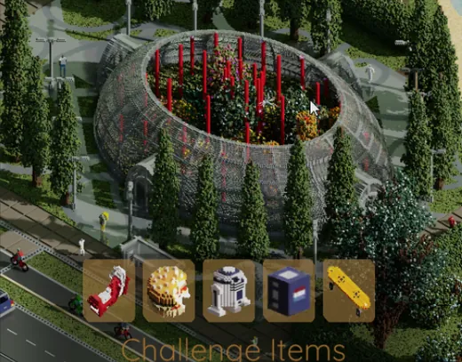
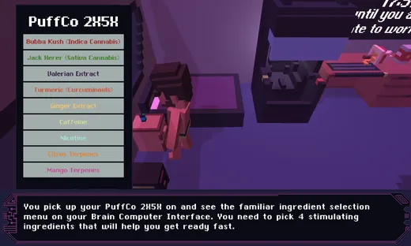
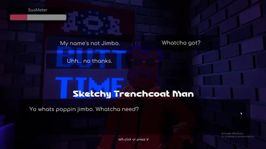
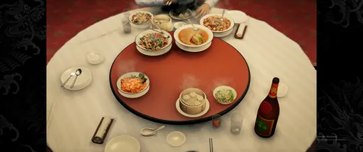
Dated from commits and project files rather than memory. A lot of it overlaps, because contract work has never once queued up politely.
The client work pays for the studio. This is what the studio is actually for.
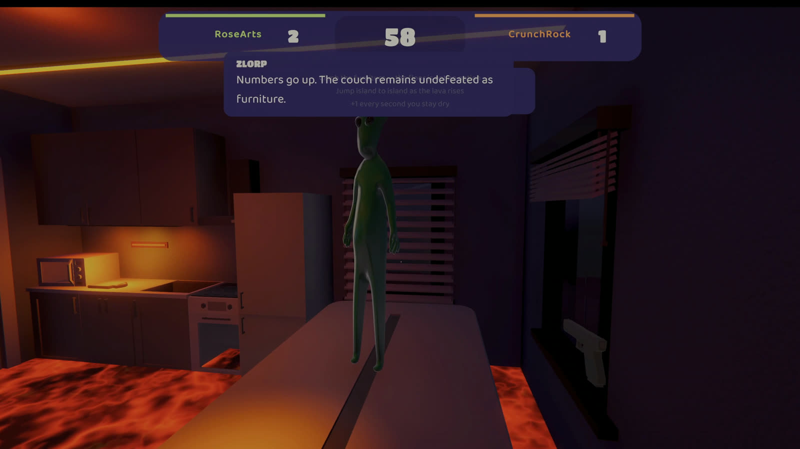
In development · Steam Early Access
Psychedelic first-person party game with an alien named Zlorp running the house like a game show. The free demo supports two-player local split-screen and Steam multiplayer; Early Access expands to six games, a larger house, and four-player local and Steam play.
See the game page →Released · Steam
Our first release, built solo start to finish. It’s a simple game, but it made it all the way onto a store page instead of dying in a folder somewhere, which turns out to be the hard part.
Find it on Steam →2021 · Browser
Voxel work from the early days — MagicaVoxel assets and environment pieces you can actually walk around in. It’s old, but it still loads in a browser, which is more than most 2021 web builds can say.
Play it on itch.io →Available for contract
Full builds, feature ownership, rescue jobs on things that have stalled, and the integrations nobody else wants to put a number on. Tell us what’s broken and we’ll tell you straight whether we’re the right shop for it.